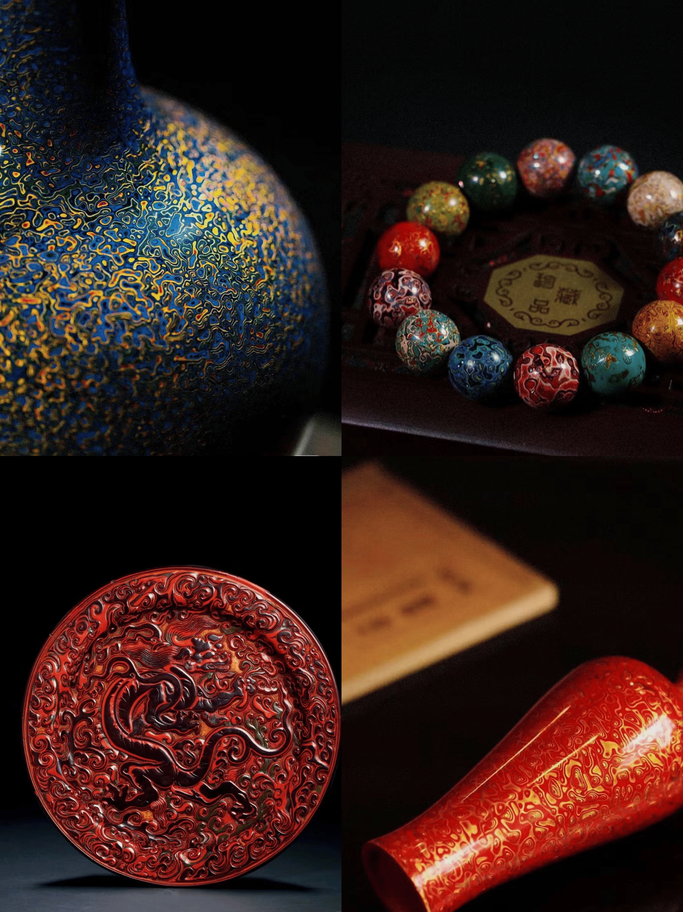

漆光流韵，艺品天成
|  |
漆器漆器，宛如一颗闪耀在东方文化苍穹的璀璨星辰，静静散发着穿越时光的迷人光辉，是传统手工艺的绝世珍宝。 制作伊始，精挑细选优质木材或其他胎体，经反复打磨，使其光滑平整。而后髹漆工序至关重要，一层又一层的大漆精心涂抹，每一层都饱含工匠的耐心与专注。绘制图案时，无论是神秘莫测的传统神话故事，还是娇艳欲滴的花卉草木，皆在工匠巧夺天工的技艺下，以金、银等颜料细腻描绘，栩栩如生。在漫长的阴干过程中，漆器逐渐蜕变，其色泽愈发深邃，质感愈发醇厚，最终呈现出或华丽富贵，或典雅素净的独特风貌，触手温润，观之心醉。它是历史与艺术的完美融合，承载着无数先人的审美意趣与生活智慧。 拥有一件漆器，便是将源远流长的文化传承紧握手中，让其在现代生活中成为一抹独特而迷人的风景，彰显非凡格调，延续千年漆艺的不朽传奇。 |